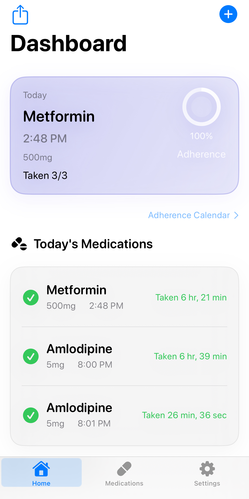

Reliable reminders
Scheduled notifications, snooze, follow-ups, lifecycle reminders, suppression handling, and reminder diagnostics for missed setup.
Offline-first iOS medication management
ChronicCare is a SwiftUI app for daily medication tracking, health logging, reminder diagnostics, medication-specific detail views, and local-first chronic care workflows.

Why it exists
Scheduled notifications, snooze, follow-ups, lifecycle reminders, suppression handling, and reminder diagnostics for missed setup.
Fast measurement entry, PRN support, medication OCR from camera, and streamlined add/edit flows for daily use.
Medication detail views connect adherence, reminder state, inventory, course status, and related health measurements.
Product structure
A focused execution screen for what needs attention now, what is overdue, and what is coming later today.
A management workspace for medications, reminder coverage, latest measurements, trends, emergency card access, and caregiver support.
A single-medication view for adherence snapshot, reminder strategy, related measurements, and maintenance state.
Core capabilities
Current focus
The project is past the “feature prototype” stage and is now being refined around notification trust, UI consistency, localization, and medication-specific workflows.
Tech stack
Open source
Browse the source, read the README, or follow tagged releases directly on GitHub.